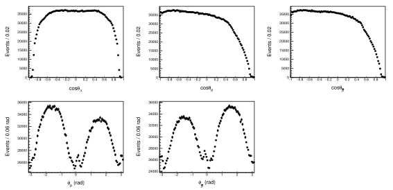
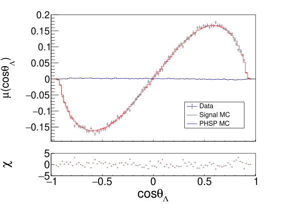
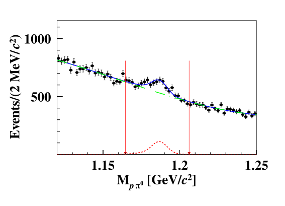

Research
Physics analyses
The physics question, the analysis method and the result — across four research directions.
01

BESIII · Published angular distributionsΛ electric dipole moment
- Question
- Does the Λ have a nonzero electric dipole moment?
- Method
- Fit spin correlations in the full J/ψ → ΛΛ̅ angular distribution.
- Result
- |dΛ| < 7.0 × 10⁻¹⁹ e cm (95% CL); consistent with zero.
02

BESIII · Published angular momentPrecision CP tests
- Question
- Do hyperons and antihyperons obey the same decay laws?
- Method
- Compare decay parameters using entangled spins and calibrated efficiencies.
- Result
- Λ-pair CP asymmetry measured at the 10⁻³ scale; consistent with CP symmetry.
03 CERN · Detector photograph
CERN · Detector photograph
CERN · Detector photographCharm decay amplitudes
- Question
- What dynamics shape Λc⁺ → Λπ⁺π⁺π⁻ decays?
- Method
- Multidimensional helicity-amplitude fits, simulation and model validation.
- Status
- Analysis in progress; no results are reported here.
04

BESIII · Published invariant-mass fitHyperons in matter
- Question
- How do hyperons interact with nucleons in matter?
- Method
- Reconstruct secondary interactions in detector material.
- Result
- Published ΛN inelastic-scattering and antihyperon-annihilation measurements.